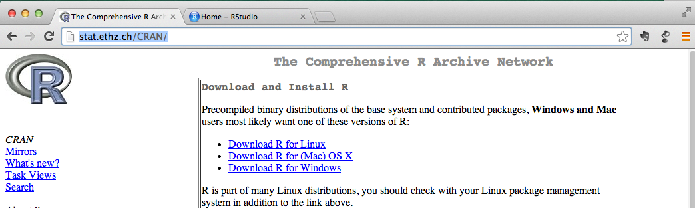
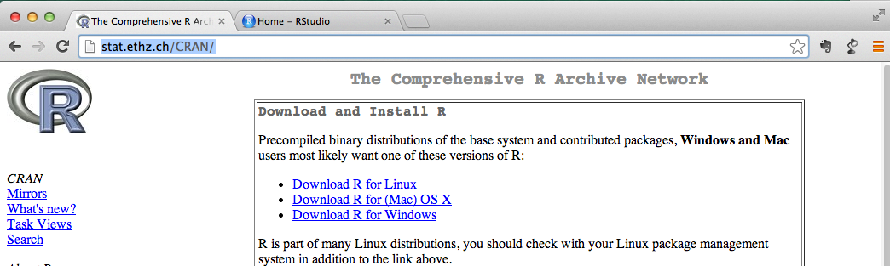

Download from CRAN
- CRAN - The Comprehensive R Archive Network http://http://cran.r-project.org/
- local mirror @ ETH: http://stat.ethz.ch/CRAN/
- precompiled binaries for Linux, Mac OS X and Windows

Peter von Rohr
Charlotte-NGS Team

2 + 3
## [1] 5
7*(2-3i)
## [1] 14-21i
x <- 7;
y <- 5*x;
x
## [1] 7
print(y)
## [1] 35
vector() creates vector objectsvn <- vector(mode="numeric",length=2);print(vn)
## [1] 0 0
vn <- c(vn,2,-1,3);print(vn)
## [1] 0 0 2 -1 3
NB c is better not used as object (variable) name
getting help with the help() function
help("vector")
Use function apropos(), if not sure about function name
apropos("ecto")
## [1] ".__C__vector" "as.data.frame.vector" "as.vector"
## [4] "as.vector.factor" "getSrcDirectory" "is.vector"
## [7] "vector" "Vectorize"
Add-on packages extend the functionality of R
Function install.packages() downloads and installs a package, e.g., the command
install.packages("VLMC")
would download and install a package called VLMC from CRAN
list of all packages that are installed is obtained by
installed.packages()
Six Basic Datatypes
numeric: real numbers, default for numbers in Rinteger: ...complex: negative square rootslogical: boolean TRUE and FALSEcharacter: ...factor: special case for fixed effect levels in modellingclass() returns the datatype of an objectis.<data.type> can be used to check whether an object is of a given datatype, e.g., is.integer()as.<datatype> can be used to explicitly convert to a datatype, e.g., as.character()5 and 5.0 are the samenumeric which correspond to floating point numbers. Henceis.integer(5)
## [1] FALSE
a <- sqrt(2);a * a == 2
## [1] FALSE
(See FAQ 7.31 http://cran.r-project.org/doc/FAQ/R-FAQ.html on equality of numbers)
as.integer() creates an integerVectors - Definition and Creation
vector is a sequence of data elements of the same basic typecomponents or membersvector() which takes as argument the mode corresponding to the basic type of the members and the length of the vector.ve <- vector(mode="logical",length=0) # empty vector of logicals
print(ve)
## logical(0)
vn <- vector(mode="numeric",length=2) # numeric
print(vn)
## [1] 0 0
c()vn <- c(2,3,5);print(vn)
## [1] 2 3 5
vn <- c(vn,10,15,19);print(vn)
## [1] 2 3 5 10 15 19
vc <- c("aa","bb","ba")
vc <- c(vn,vc);print(vc)
## [1] "2" "3" "5" "10" "15" "19" "aa" "bb" "ba"
length(vn)
## [1] 6
NB: testing whether a vector is empty can be done with
length(vn) == 0;length(ve) == 0
## [1] FALSE
## [1] TRUE
type coersion in most cases without further notice. vn and vcvn <- c(2,3,5)
vc <- c("aa","bb","ba")
vc <- c(vn,vc);print(vc)
## [1] "2" "3" "5" "aa" "bb" "ba"
makes R coerce all members of the result into characters
a <- c(33,5,7,13,-1)
a > 5
## [1] TRUE FALSE TRUE TRUE FALSE
Arithmetic operations on vectors are performed element-wise
a <- c(3,5,7,13);b <- c(2,6,4,1)
a+b;a-b
## [1] 5 11 11 14
## [1] 1 -1 3 12
7*a;a*b;a/b
## [1] 21 35 49 91
## [1] 6 30 28 13
## [1] 1.5000 0.8333 1.7500 13.0000
In R multiplication between two vectors is done element-wise, unlike other systems like Matlab
The crossproduct between two vectors is obtained by
crossprod(a,b)
## [,1]
## [1,] 77
When doing arithmetic computations on vectors of different lengths, R recycles the shorter vector, that means the shorter vector is concatenated as many times until its length fits the length of the longer vector
bShort <- b[1:2]
a + bShort
## [1] 5 11 9 19
In case the length of the longer vector is not a multiple of the length of the shorter vector, R still recycles the shorter vector and it produces a warning on the console
Members or components of a vector can be accessed in three different ways
vs <- c("a","vector","of","strings")
vs[3]
## [1] "of"
-i removes the i-th elementvs[-2]
## [1] "a" "of" "strings"
vs <- c("a","vector","of","strings")
vl <- c(TRUE,FALSE,TRUE,TRUE)
vs[vl]
## [1] "a" "of" "strings"
vs[nchar(vs) > 2]
## [1] "vector" "strings"
returns all words longer than two characters
Vector elements are accessed by specifying names, provided the vector was assigned names before
vaddress <- c("Mary","Poppins",
"Wonderstreet","Wondertown")
names(vaddress) <- c("First","Last",
"Street","Town")
vaddress["Last"]
## Last
## "Poppins"
vaddress[c("First","Town")]
## First Town
## "Mary" "Wondertown"
matrix()mA <- matrix(c(3,2,55,23,4,511),nrow=2,ncol=3,
byrow=TRUE)
mA
## [,1] [,2] [,3]
## [1,] 3 2 55
## [2,] 23 4 511
where nrow and ncol specify the number of rows and the number of columns.
byrow=TRUE fills the matrix row-wiseMatrix elements are accessed analougously to vectors for index numbers and names
mA[2,2]
## [1] 4
dimnames(mA) <- list(c("row1","row2"),
c("col1","col2","col3"))
mA;mA["row1","col2"]
## col1 col2 col3
## row1 3 2 55
## row2 23 4 511
## [1] 2
mA[2,]
## col1 col2 col3
## 23 4 511
mA[,1]
## row1 row2
## 3 23
mB <- matrix(c(3,5,-43), nrow=1);rbind(mA,mB) # extension by 1 row
## col1 col2 col3
## row1 3 2 55
## row2 23 4 511
## 3 5 -43
mC <- matrix(c(6,2), ncol=1);cbind(mA,mC) # extension by 1 column
## col1 col2 col3
## row1 3 2 55 6
## row2 23 4 511 2
conversion of matrix into a vector
c(mA)
## [1] 3 23 2 4 55 511
t(mA)
## row1 row2
## col1 3 23
## col2 2 4
## col3 55 511
mMat <- matrix(c(5,1,1,3),2,2);chol(mMat)
## [,1] [,2]
## [1,] 2.236 0.4472
## [2,] 0.000 1.6733
listis an object containing an ordered collection of objects which are called the components of the listlst <- list(n = c(5,-7,1), s = c("Fred","Mary"), l = c(TRUE,TRUE,FALSE))
[]lst[2]
## $s
## [1] "Fred" "Mary"
returns a new list with the second component of lst
[[]] are used to access components of a listlst[[2]]
## [1] "Fred" "Mary"
lst[[1]][2] <- 43;lst[1]
## $n
## [1] 5 43 1
lst["s"]
## $s
## [1] "Fred" "Mary"
lst$s
## [1] "Fred" "Mary"
data frame is a list of vectors all of the same lengthdata.frame()daFr <- data.frame(nums = c(2,-12), strs = c("Alice","Bob"), bools = c(TRUE,FALSE))
daFr[2,1]; daFr$bools
## [1] -12
## [1] TRUE FALSE
head(mtcars, n = 3)
## mpg cyl disp hp drat wt qsec vs am gear carb
## Mazda RX4 21.0 6 160 110 3.90 2.620 16.46 0 1 4 4
## Mazda RX4 Wag 21.0 6 160 110 3.90 2.875 17.02 0 1 4 4
## Datsun 710 22.8 4 108 93 3.85 2.320 18.61 1 1 4 1
header, it is obtained via function colnames()colnames(mtcars)
## [1] "mpg" "cyl" "disp" "hp" "drat" "wt" "qsec" "vs" "am" "gear"
## [11] "carb"
head(rownames(mtcars), n = 3)
## [1] "Mazda RX4" "Mazda RX4 Wag" "Datsun 710"
nrow() and ncol() or by the dim() nrow(mtcars);ncol(mtcars)
## [1] 32
## [1] 11
dim(mtcars)
## [1] 32 11
head(mtcars$mpg, n = 3)
## [1] 21.0 21.0 22.8
mtcars["Valiant","gear"]
## [1] 3